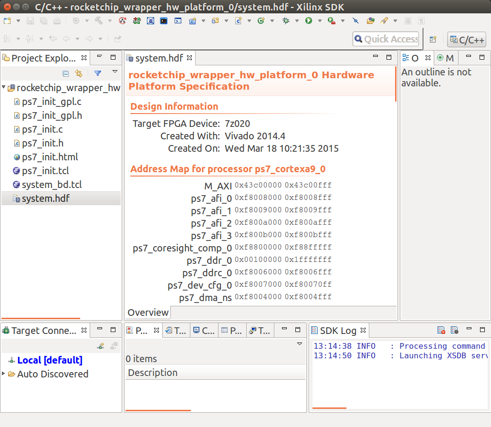
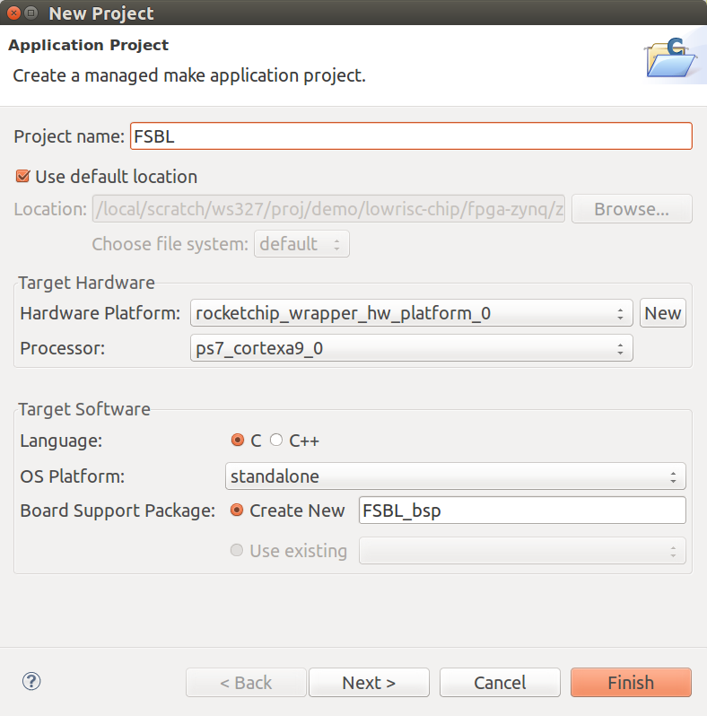
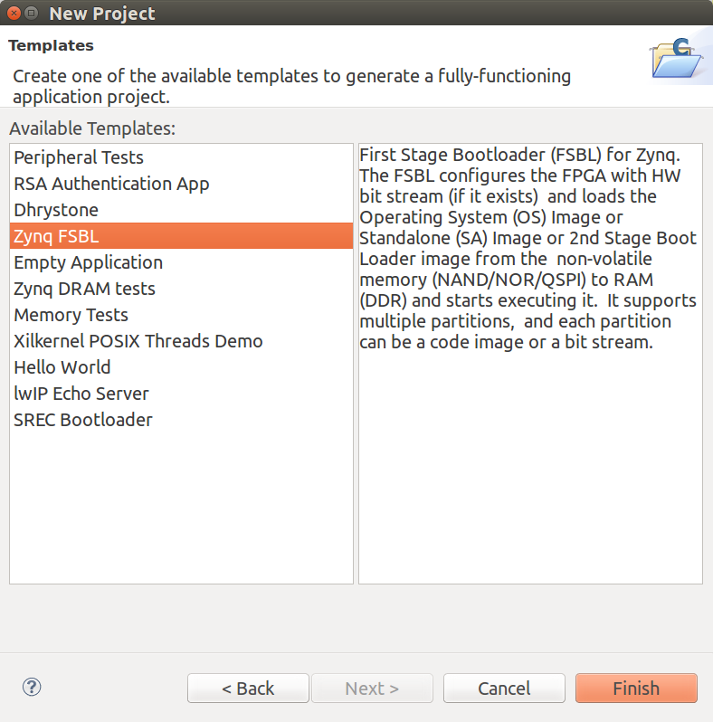

⇡ lowRISC tagged memory tutorial
Building the boot image from scratch
The build image script
You can rebuild most of the boot image from scratch using the
build_image.sh script:
# setup the RISCV environment variables
# setup the Xilinx environment variables
cd $TOP/fpga-zynq/zedboard
./build_image.sh
The individual steps needed to complete this process are described in more detail below. Similar instructions are provided for the original Rocket chip here.
Requirements
- Xilinx Vivado 2014.4
- Ensure Xilinx patch 63036 is installed otherwise the First Stage Boot Loader (FSBL) cannot be generated.
1. Generating the FPGA bitstream
The easiest way to generate a bitstream is to use the Makefile provided:
# set up the RISCV environment variables
# set up the Xilinx environment variables
cd $TOP/fpga-zynq/zedboard
# generate the FPGA Verilog code if not available
make rocket
# generate the Vivado project and compile it to a bitstream
make bitstream
Alternatively, using the GUI:
# set up the RISCV environment variables
# set up the Xilinx environment variables
cd $TOP/fpga-zynq/zedboard
# generate the FPGA Verilog code if not available
make rocket
# Start Vivado and load the project file:
make vivado
Then select “Generate Bitstream” in the “Program and Debug” menu.
Either way, a bitstream file should be generated at:
zedboard_rocketchip/zedboard_rocketchip.runs/impl_1/rocketchip_wrapper.bit
2. Export hardware information for SDK
Select File->Export->Export Hardware. In the “Export Hardware” panel
that appears, simply press “OK” with default options (there is no need
to tick the “include bitstream” option). The hardware information is
then exported to:
zedboard_rocketchip/zedboard_rocketchip.runs/impl_1/rocketchip_wrapper.bit
3. Building the First Stage Boot Loader (FSBL)
Open the Xilinx SDK from the Vivado GUI (File->Launch SDK).
In the “Launch SDK” panel that appears, press “OK” with the default options. You should see the SDK window as below.

Note: If there are error messages (e.g. Hsi 55-1464 : Hardware
instant EMPTY not found in the design), the Xilinx SDK probably
hasn’t been patched as required. Please refer to this
page for
instructions on installing the patch. After patching Vivado 2014.4,
you will need to start from step 1. Remember to make clean before
make rocket.
To generate the FSBL, select File->New->Application Project. This
will open the “New Projet” panel (see below). In the “Project name”
field enter “FSBL”.

Note: If you choose a different name, such as YOUR_FSBL, you need to
copy the generated elf file:
zedboard_rocketchip/zedboard_rocketchip.sdk/YOUR_FSBL/Debug/YOUR_FSBL.elf
to fpga-images-zedboard/boot_image/zynq_fsbl.elf.
Leaving all the options unchanged, press “Next”. In the “Available Templates” select “Zynq FSBL” and finally press “Finish”. The FSBL elf file will be generated and placed at:
zedboard_rocketchip/zedboard_rocketchip.sdk/FSBL/Debug/FSBL.elf

4. Building u-boot for the Zynq ARM core
This step is not normally required.
# setup the RISCV environment variables
# setup the Xilinx environment variables
cd $TOP/fpga-zynq/zedboard
make arm-uboot
The resulting u-boot.elf file is placed in soft_build/u-boot.elf.
Now copy this file to the boot_image directory:
cp soft_build/u-boot.elf fpga-images-zedboard/boot_image/
5. Creating the FPGA boot image (boot.bin)
The manual steps for completing this process are described here.
Alternatively, simply type:
# setup the RISCV environment variables
cd $TOP/fpga-zynq/zedboard
rm fpga-images-zedboard/boot.bin
make fpga-images-zedboard/boot.bin